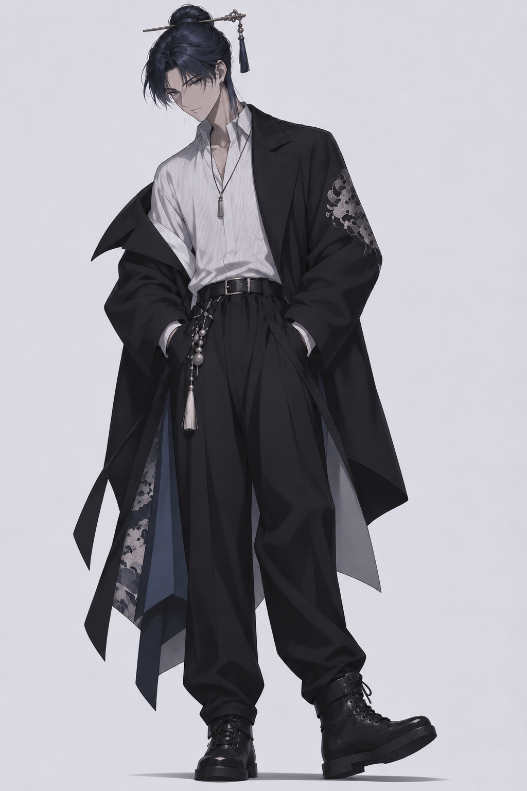

MEMBER 02 / 05

WOLDAM MEMBER
류현RYUHYUN
평생 하늘만 바라보던 존재가
처음으로 다른 삶을 선택한 순간.
“더 높은 곳보다, 지금 저 아래가 궁금했다.”
- ORIGIN
- 잠룡연(潛龍淵)
- ROLE
- 승천을 기다린 영물
- HEIGHT
- 189cm
- PERSONALITY
- 과묵하지만 속정 깊은 관찰자
01 THE DEEP DRAGON POOL
수백 년 동안,
오직 승천을 위해.
류현은 하늘에 닿지 못하는 깊은 용소, 잠룡연에서 오랫동안 살았다. 그의 꿈은 단 하나, 용이 되어 하늘로 오르는 것이었다. 마을과 왕조가 바뀌는 세월에도 그는 물속에서 수행하며 자신의 운명을 기다렸다.
더 높은 곳에 도달하는 일만이 자신에게 주어진 삶이라고 믿었다.
02 THE NIGHT OF RAIN
하늘로 향하던 몸을
멈추게 한 노래.
마침내 승천의 기회가 찾아온 폭우의 밤, 강가 마을에서는 물에 잠긴 집을 정리하던 사람들이 겁에 질린 아이를 위해 노래를 불렀다. 한 사람의 목소리는 어느새 마을 전체의 노래가 되었다.
류현은 하늘로 올라가던 것을 멈추고 물살을 가라앉혔다. 수백 년 동안 기다린 하늘보다, 서로를 다독이는 사람들의 목소리가 더 궁금해졌기 때문이다.
03 STAYING HERE
지금 이 순간에
머물러도 괜찮다는 말.
그날 이후 류현은 인간의 모습으로 세상을 떠돌았다. 음악은 평생 더 높은 곳만 바라보던 그에게, 지금 이 순간에 머물러도 괜찮다고 말해 주는 듯했다.
팀에서 가장 말수는 적지만, 멤버들의 상태를 누구보다 세심하게 챙긴다. 무대 위 관객들이 함께 노래하는 순간에만 희미하게 웃는 이유는, 그가 선택한 이곳에 대한 대답일지도 모른다.